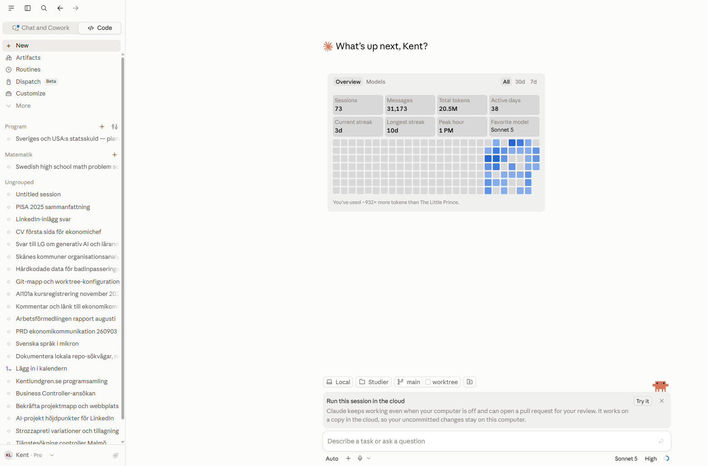
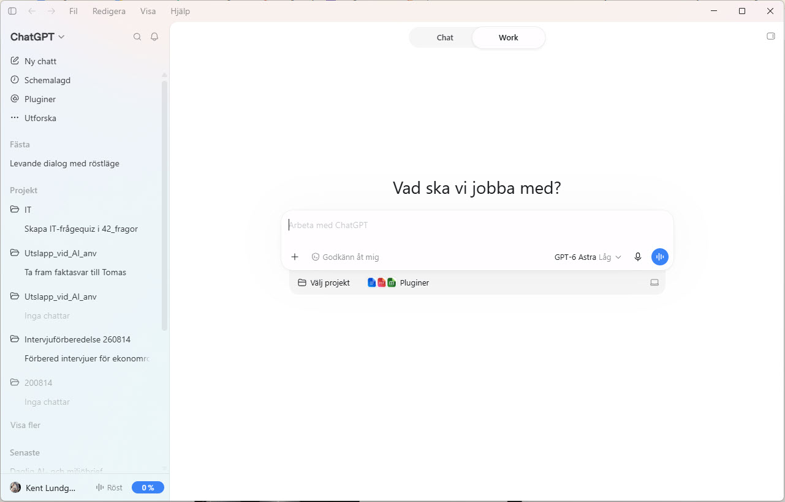

Syn på lärande · Nr 2
Vad betyder ”bäst” när modellen skriver koden?
En läsning av ett LinkedIn-inlägg om att GPT‑6 hade kört om Claude – och ett försök att väga kodförmåga, harness och pris mot varandra utan att låtsas att det finns ett facit.
Den här sidan är ett utkast för egen granskning. Siffrorna 1–5 längre ned är mitt preliminära omdöme, inte ett fryst betyg, och ett par abonnemangsuppgifter är ännu inte kontrollerade mot bolagens egna hjälpsidor. Underlaget – research och kostnadsmatematik – ligger som egna filer i mappen på GitHub. GitHub Pages är inte påslaget för det här repot ännu.
Vill du bara se sammanställningen: hoppa till överblicken.
Jag blev tipsad om ett inlägg av Osama Romoh på LinkedIn (Romoh, 2026). Rubriken var ungefär: ”I love Claude, but GPT‑6 Astra blew Fable 5 out of the water for me.” Han hade använt Claude länge, blev överraskad av OpenAI:s nya modell, och köpte ChatGPT Pro vid sidan av sitt Claude Max-abonnemang. Han behöll alltså båda.
Jag kodar en hel del med generativ AI numera – små webbsidor och verktyg, den här sidan är ett exempel, och några andra har jag samlat i en egen presentation (Lundgren, 2026b). Hur jag brukar arbeta när jag kodar med en modell – från kravdokument till publicerad sida – har jag beskrivit i det jag kallar Claude-kompassen (Lundgren, 2026a). Där passar den här jämförelsen in: verktygskedjan är densamma oavsett modell, och det jag väger är vilken kodmotor som ska sitta i den.
Jag har fastnat för Claude Code. Så Romohs inlägg kliade. Är GPT‑6 bättre? Och vad menar vi egentligen med bättre, när verktyget delvis skriver koden åt oss? Det är den frågan jag ville rota i, med min egen syn på kunskap som lins.
Vad inlägget säger #
Romohs poäng är smalare än rubriken. Han skriver inte om kodkvalitet och han visar inga siffror. Det han fastnat för är att GPT‑6 följer instruktioner tätare: ber han om ett kort svar får han ett kort svar, inte fem stycken som förklarar varför svaret är kort. ”Astra has been really, really good at giving me what I actually asked for”, skriver han, och tillägger att det spelar roll när man använder modellerna i skarpt arbete och inte vill påminna dem om instruktioner man redan gett.
Det är en subjektiv arbetsupplevelse på en enda dimension. Men den duger som avstamp, för den öppnar de tre frågor jag tycker är intressanta: kan den koda, hur styr man den, och vad kostar nyttan. Innan dess en sak som gjorde hela jämförelsen krångligare än jag trodde.
Vilken modell pratar vi ens om? #
När jag skulle ta reda på vad som gällde märkte jag att frågan ”vilken modell” inte har ett enkelt svar, och att det i sig är en del av problemet.
Modellerna står inte stilla. Bolagen uppgraderar ofta, och varje uppgradering får ett nytt namn eller nummer. På Claude-sidan finns just nu namn och nummer om vartannat: Fable 5.1, Mythos 5.1, Opus 5 (med 4.8, 4.7, 4.6, 4.5 kvar i prislistan), Sonnet 5, Haiku 4.5. På OpenAI-sidan finns GPT‑6 Astra (släppt 3 september 2026), tre varianter av GPT‑5.6 som heter Sol, Terra och Luna, en forskningsförhandsvisning som heter 5.3 Codex Spark, och det förra flaggskeppet 5.5. En kodspecifik modell, 5.3‑codex, är redan avvecklad. GPT‑5.4 pensionerades 31 augusti, och om du hade den sparad i en konfigurationsfil fick du byta ut den mot 5.6‑terra själv.
Namnen döljer dessutom vad som körs. ”GPT‑6”, ”Claude Code” och ”Codex” är inte modeller utan familjer eller produkter. Skärmdumpen jag hade framför mig sa ”GPT‑6 Astra Låg” – det är modell, variant och effektnivå staplade i en etikett. Och vilken underliggande modell som faktiskt svarar kan bytas eller ruttas om utan att jag märker det.
Så varje siffra i den här texten är daterad ”per september 2026”, och ”vilken modell används egentligen” är inte en parentes utan en del av svaret. Det påminner om något jag återkommer till om prov och betyg: måttet är ett val, inte en naturlag – och här byter till och med det som mäts namn snabbare än en text hinner skrivas.
Kan den koda? #
Kort svar: båda kan, ungefär lika bra, och benchmarken har svårt att skilja dem åt längre.
Det brukar mätas med tester som SWE‑bench Verified (lös riktiga GitHub-ärenden) och Terminal‑Bench (klara stökiga terminaluppgifter). Ett oberoende index från Artificial Analysis, publicerat samma dag som GPT‑6 kom (Artificial Analysis, 2026), sätter Claude Fable 5.1 i Claude Code på 70 och GPT‑6 Astra på 67 – i praktiken oavgjort, och Opus 5 ligger på samma nivå. På ett annat agentiskt kodtest, DeepSWE, beskrivs GPT‑6 som ”a tie, not a takeover”. Där Astra vinner tydligt är på Terminal‑Bench 4.0, alltså lång, rörig terminalkörning med felåterhämtning.
Ett tecken på hur trubbig måttstocken blivit: när Anthropic presenterade Opus 5 (Anthropic, 2026a) nämnde de inte ens SWE‑bench Verified, utan ledde med andra tester och med kostnad per uppgift. Toppmodellerna ligger så tätt att provet mättat. Och Terminal‑Bench finns i minst tre versioner samtidigt, med olika vinnare. Vilket test man väljer är i sig ett ställningstagande.
Det finns en försiktig kvalitetsskillnad åt Claudes håll. I en genomgång där någon kört båda i över hundra timmar (Joshi, 2026) bedömde blinda granskare Claude-koden som renare i två fall av tre, även när skribenten själv föredrog Codex i vardagen. Men det är en röst, inte en trend, och jag lägger inte mer i det än så.
Hur styr man den? #
Det här – harness, hur modellen kopplas till dina filer, verktyg och instruktioner – är enligt mig den intressantaste dimensionen, och den som Romoh egentligen är inne på. Jag delar den i två: vad som finns, och hur det känns.
Vad som finns #
Claude Code
(Anthropic, 2026b)
läser en CLAUDE.md i projektet vid varje sessionsstart, bygger
ett eget minne mellan sessioner, kan utökas med ”skills” och
”hooks” (skalkommandon före eller efter en åtgärd), kopplas till
externa verktyg via MCP, och köra flera delagenter parallellt. Den finns i
terminalen, i VS Code och Cursor, i JetBrains, i en egen skrivbordsapp och i
webbläsaren – och samma CLAUDE.md och samma inställningar
gäller överallt.
Codex
(OpenAI, 2026b)
läser en AGENTS.md med lagrade överlagringar, har
konfigurationsfiler, stöder MCP, och delar numera samma
”skills”-standard som Claude. Den finns som ett
öppenkällkods-CLI, en IDE-tillägg, en molntjänst, i ChatGPT-appen och på
webben.
Med andra ord: mekaniken konvergerar. För ett år sedan var det en tydligare skillnad; nu stöder båda samma verktygsstandard och samma kopplingsprotokoll. Claude har fler dokumenterade primitiver kvar som är dess egna – det automatiska minnet, hooks – men avståndet har krympt.
Hur det känns #
Här går en genuin skiljelinje, och den handlar om filosofi mer än om funktioner. Claude Code är interaktiv: den visar sitt resonemang och frågar vid vägval. Codex lutar åt det autonoma: du lämnar en uppgift och får tillbaka en implementation. En utvecklare som bytte beskrev Claude Code som ”en kollega som hela tiden berättar vad den gör” och Codex som ”hand it a task, get the implementation back”. Ingen av dem är fel – det beror på vad man vill.
Det syns i apparna. Här är de två, sedda sida vid sida:


Båda apparna har vid det här laget projekt, schemalagda uppgifter, plugins och molnkörning. Skillnaden är vad de lyfter fram. Och för mig spelar det roll: jag använder Cursor för att hantera Git och GitHub oavsett modell, så det jag jämför är vilken kodmotor jag kör vid sidan av Cursor. Ett CLI eller en IDE-tillägg som arbetar mot samma lokala filer passar den kedjan bättre än en app med en egen, mer inmurad projektyta.
Vad kostar nyttan? #
Min tumregel är enkel: om en modell kostar dubbelt så mycket bör den vara dubbelt så bra, annars är den sämre värd – kvalitet är nytta delat med kostnad. Det tvingar fram frågan hur mycket kapacitet jag egentligen behöver.
Flaggskeppen är prissatta likadant: både Claude Fable 5.1 och GPT‑6 Astra kostar 10 dollar per miljon input-tokens och 50 dollar per miljon output-tokens (Anthropic, 2026c; OpenAI, 2026a). Tre saker bryter ändå symmetrin. Claudes nyare modeller använder en tokenizer som ger ungefär 30 % fler tokens för samma text, så samma uppgift blir dyrare än listpriset antyder. Astra dubblar priset i långt kontext; Fable gör inte det. Och Astra är ett prishopp uppåt från den förra generationen – men använder å andra sidan färre tokens per koduppgift, vilket delvis tar ut det.
Går man ned en nivå – till ”bra men inte bäst”, alltså Claude Sonnet 5 mot GPT‑5.6 Terra – blir det billigare och nästan jämnt: ungefär 2 dollar per miljon input och 10–12 per miljon output för båda. Och det är värt att stanna vid, för det verkar gälla generellt: flaggskeppet kostar ungefär fem gånger så mycket per token som mellanklassen, för en skillnad i kodförmåga som benchmarken knappt kan mäta. Näst bästa modellen är sällan mycket sämre – men nästan alltid mycket billigare.
Räknat på min egen tänkta användning – 35 timmar kodning i veckan, alltså heltid, ungefär 150 aktiva timmar i månaden – med ett utskrivet antagande om hur många tokens en aktiv timme drar (drygt två miljoner, mest billiga cache-läsningar): rå API-kostnad landar på en orimlig nivå, kring 10 000 kronor i månaden för flaggskeppet. Ingen betalar det. Man kör abonnemang och möter gränserna. Och där ser bilden ut så här, så långt den gått att verifiera mot tester och användarrapporter ej mot bolagens egna hjälpsidor:
- Vid heltid med flaggskeppet spränger man Claude‑abonnemangets veckogränser och betalar dyr API-debitering för överskottet – kanske 7 000 kronor i månaden. ChatGPT/Codex beskrivs som att gränserna sällan märks ens vid tung användning – kanske 2 300 kronor. Anthropic har höjt Claude Codes gränser flera gånger under 2026, vilket säger något om att de var ett problem.
- Vid mellanmodell som ryms i abonnemanget är det ungefär 1 000–2 000 kronor i månaden för båda.
En observation som förenklade räknandet: harness sitter i klienten, inte
i modellen. Byter jag från Fable till Sonnet är jag kvar i samma Claude Code
med samma CLAUDE.md. Så det är bara kodförmåga och kostnad som
ändras när man byter modellnivå – inte hur det är att styra.
Överblick #
Siffrorna 1–5 nedan är mitt eget omdöme, inte en mätning: 3 = jämförbart och räcker, 4 = märkbart bättre, 2 = märkbart sämre. Jag avviker från 3 bara där jag har minst två oberoende källor. Harness-raderna gäller klienten och ändras inte med modellnivån.
| Facett | Claude Code | OpenAI / Codex |
|---|---|---|
| Kodförmåga | 3 | 3 |
| Harness – vad som finns | 4 | 3 |
| Harness – hur det känns | 3 | 3 |
| Nytta, snitt | 3,3 | 3,0 |
| Kostnad, flaggskepp heltid | ~7 000 kr/mån | ~2 300 kr/mån |
| Kostnad, mellanmodell i plan | ~1 100 kr/mån | ~1 000 kr/mån |
| Nytta per krona – flaggskepp | 100 | ~270 |
| Nytta per krona – mellanmodell | ~114 | 100 |
Nytta per krona är nyttan delad med kostnaden, indexerad så att
den lägsta i varje rad blir 100. Den är illustrativ –
täljaren är mitt omdöme, inte en mätning. Kostnaderna är min uppskattning
för 35 h/vecka; hela uträkningen och alla antaganden ligger i
kostnadskalkyl-35h.md i mappen.
Berättelsen tabellen landar i: kapaciteten är i stort sett jämn, och priset avgör. Kräver man flaggskeppet och kör heltid ger Codex ungefär tre gånger mer nytta per krona. Nöjer man sig med en bra mellanmodell och håller sig i abonnemanget är det nästan jämnt, med en hårfin fördel för Claude – för då väger harness-försprånget tyngre än den lilla prisskillnaden.
Andras röster #
Debatten pågår, och den lutar Codex-positivt just nu – men med en återkommande brasklapp om kodkvalitet. Jag samlar rösterna, med vad de hävdar och vad jag tycker om det, i jamforelse-roster.md. Ett urval:
Fem röster
-
Astra has been really, really good at giving me what I actually asked for.
Osama Romoh, LinkedIn, september 2026 – om instruktionsföljsamhet. Köpte ChatGPT Pro men behöll Claude Max. -
If someone made me uninstall one today, it's not Codex.
Prathit Joshi, Composio, augusti 2026 – efter 100+ timmar med båda. Codex vann 3–2, men blinda granskare bedömde Claude-koden som renare. -
Fast mode + generous limits = more reps.
Peter Yang, tidigare inbiten Claude Code-användare, om varför han bytte till Codex – iterationstakt, inte kapacitet. -
65 % föredrar Codex i vardagen – men blinda granskningar bedömde Claude-koden som renare 67 % av gångerna.
Refererad utvecklarenkät, 2026. Ursprunget är inte spårat till en primärkälla. -
Claude Code för arkitektur och planering, Codex för tät implementation. Konsensus: kör båda.
Sammanfattning av flera jämförelser – det vanligaste rådet är att inte välja.
Vad jag själv landar i #
Jag tänker inte byta från Claude Code. Men inte för att det är ”bäst” i någon absolut mening – utan för att den interaktiva stilen, att modellen visar hur den tänker och frågar vid vägval, passar hur jag vill arbeta. Det är samma skäl som gör att jag är liberal med att använda AI när jag lär mig något: skillnaden som betyder något är mellan ett verktyg som förklarar tills jag förstår och ett som levererar så att jag slipper. En modell som resonerar högt inbjuder till det första.
Och min syn på kunskap gör mig misstänksam mot själva benchmark-tävlingen. Ett prov för kod bär en kunskapssyn precis som ett nationellt prov gör: det bestämmer vad som räknas som att kunna. När Anthropic slutar leda med SWE‑bench för att den mättat, och OpenAI vinner en annan mätning i stället, så säger det mer om vilket prov man väljer än om vilken modell som är bäst. ”Bäst” är ett rörligt mål, inte minst för att det som mäts byter namn var sjätte vecka.
Frågan ”dubbelt så dyr, dubbelt så bra?” har ett tydligare svar, och det är kanske textens mest användbara slutsats: för det mesta jag gör behöver jag inte flaggskeppet. Näst bästa modellen – Sonnet 5 eller GPT‑5.6 Terra – är knappt sämre på det jag ber om, men kostar ungefär en femtedel. Och då är valet mellan Claude och Codex nästan en smaksak – det som skiljer är hur man vill att verktyget ska bete sig, inte om det klarar uppgiften.
Det Romohs inlägg egentligen visade var kanske inte att GPT‑6 är bättre, utan att en van Claude-användare valde att betala för båda. Svaret blev ”ja tack”, inte ”antingen eller”. Det är en bild av frågan, inte ett facit.
Harvardstil. Länkarna öppnades och kontrollerades 2026-09-09. Alla uppgifter är daterade ”per september 2026” eftersom priser och modeller ändras snabbt. Den kursiva parentesen förklarar varför källan är med. Den första hänvisningen till varje källa är länkad i löptexten ovan.
Anthropic (2026a) Claude Opus 5. Nyhet, 24 juli 2026. Tillgänglig på: https://www.anthropic.com/news/claude-opus-5 (hämtad 2026-09-09). (Anthropics egen presentation av Opus 5. Nämner inte SWE-bench Verified, utan leder med andra tester och med kostnad per uppgift – själva iakttagelsen att flaggskeppsannonsen gått ifrån standardmåttet.)
Anthropic (2026b) Claude Code overview. Produktdokumentation. Tillgänglig på: https://code.claude.com/docs/en/overview (hämtad 2026-09-09). (Primärkälla för vilka ytor Claude Code har och vilka harness-primitiver som finns: CLAUDE.md, auto memory, skills, hooks, MCP, subagenter. Grunden för avsnittet ”Vad som finns”.)
Anthropic (2026c) Pricing. Plattformsdokumentation. Tillgänglig på: https://platform.claude.com/docs/en/about-claude/pricing (hämtad 2026-09-09). (Primärkälla för alla Claude-priser per miljon tokens, cache-priser, och noten om att modeller från 4.7 och framåt använder en tokenizer som ger ~30 % fler tokens för samma text.)
Artificial Analysis (2026) Benchmarking GPT-6 Astra. Analys, 3 september 2026. Tillgänglig på: https://artificialanalysis.ai/articles/benchmarking-gpt-6-astra (hämtad 2026-09-09). (Oberoende benchmark. Källan för att Fable 5.1 i Claude Code leder deras Coding Agent Index med 70 mot GPT-6 Astras 67, och för att Astra är mer token-effektiv på kod.)
Joshi, P. (2026) Claude Code vs Codex: what I learned after 100+ hours with both. Composio-bloggen, 18 augusti 2026. Tillgänglig på: https://composio.dev/content/claude-code-vs-openai-codex (hämtad 2026-09-09). (Hands-on-jämförelse med redovisad metod. Källan för ”Codex vann 3–2”, för att blinda granskare bedömde Claude-koden som renare, för citatet om att inte avinstallera Codex, och för abonnemangsgränsernas praktiska betydelse.)
Lundgren, K. (2026a) Claude-kompassen. Interaktiv sida, publicerad 29 juli 2026. Tillgänglig på: https://kentlundgren.github.io/AI-teknik/AI_modeller/Claude/olika_Claude_modeller/ (hämtad 2026-09-09). (Min egen beskrivning av hur jag arbetar med generativ AI när jag kodar – från kravdokument via filhantering och val av arbetsyta till versionshantering och publicering. Den processen är ramen som den här jämförelsen sker inom.)
Lundgren, K. (2026b) AI-projekt, en resa – version Nr 1. Interaktiv presentation, daterad 4 september 2026. Tillgänglig på: https://kentlundgren.github.io/AI-teknik/Presentationer/Nr1/ (hämtad 2026-09-09). (En presentation av några av de program och sidor jag byggt med generativ AI som verktyg – konkreta exempel på vad processen ovan lett till.)
OpenAI (2026a) API Pricing. Utvecklardokumentation. Tillgänglig på: https://developers.openai.com/api/docs/pricing (hämtad 2026-09-09). (Primärkälla för GPT-6 Astras pris, för att långt kontext dubblar priset, och för priserna på GPT-5.6 Sol, Terra och Luna.)
OpenAI (2026b) Codex documentation (inklusive Models). Tillgänglig på: https://learn.chatgpt.com/docs (hämtad 2026-09-09). (Primärkälla för vilka klienter Codex har – CLI, IDE-tillägg, moln, ChatGPT-app – för AGENTS.md och konfigurationsfilerna, och för modellväljaren: Astra, Sol, Terra, Luna, samt att 5.3-codex avvecklats och 5.4 pensionerats.)
Romoh, O. (2026) ”I love Claude, but GPT-6 Astra blew Fable 5 out of the water for me”. Inlägg, LinkedIn, september 2026. (Texten hela genomgången utgår från. Permalänk och exakt datum är inte verifierade – inlägget lästes via en skärmdump. Handlar om instruktionsföljsamhet, inte kodkvalitet, och innehåller inga siffror.)